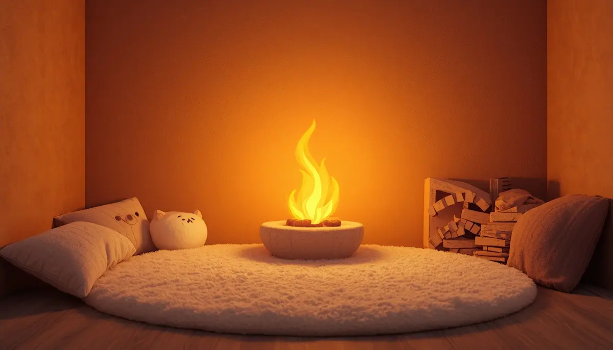
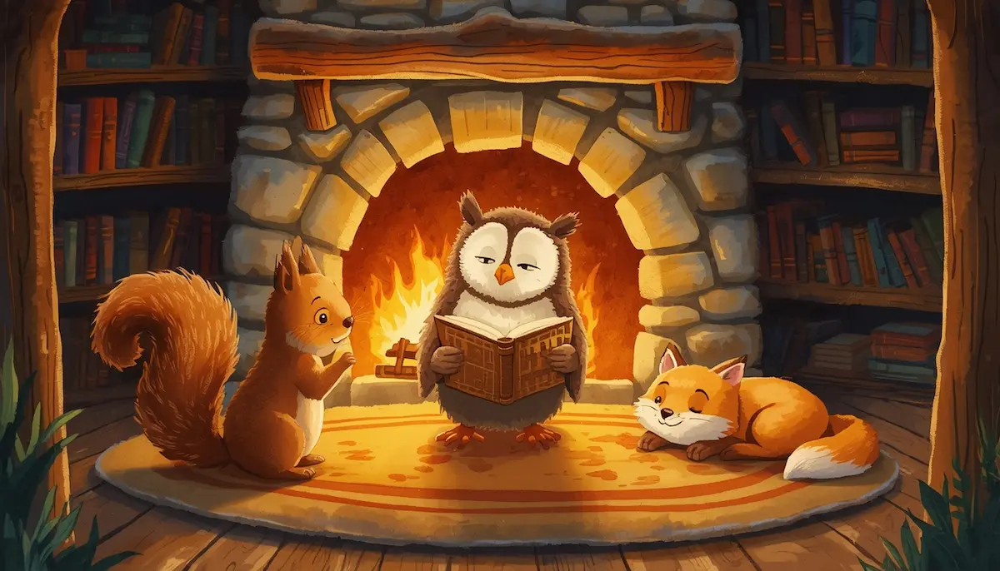
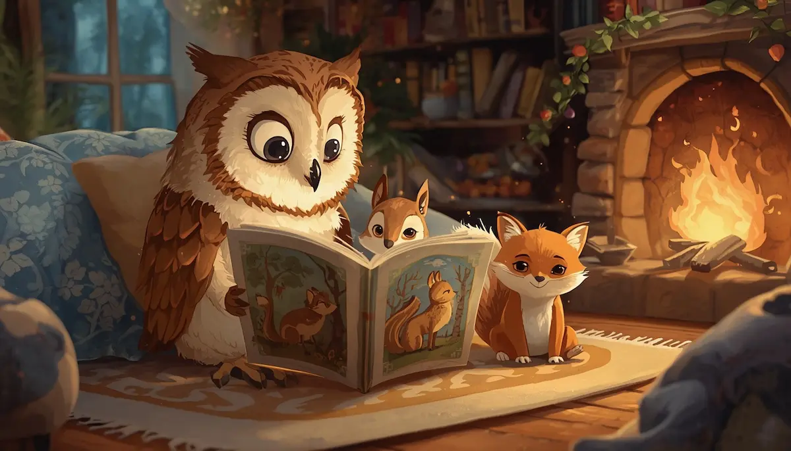
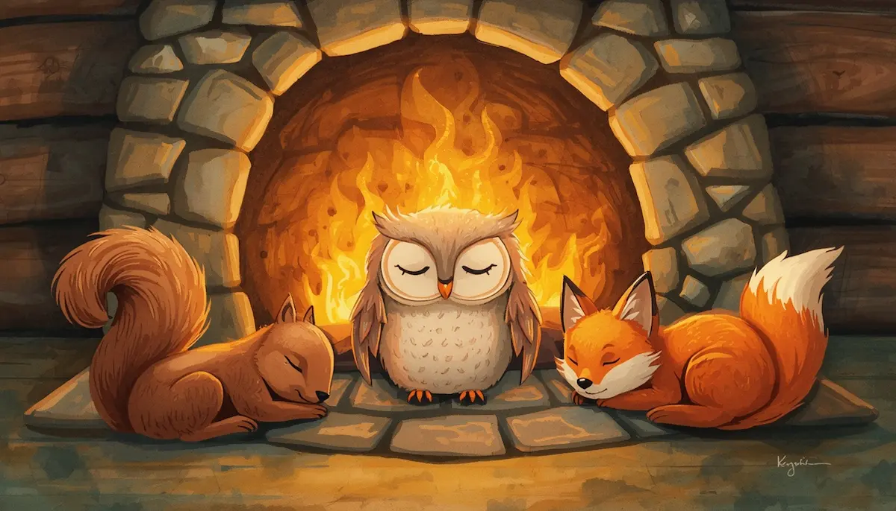
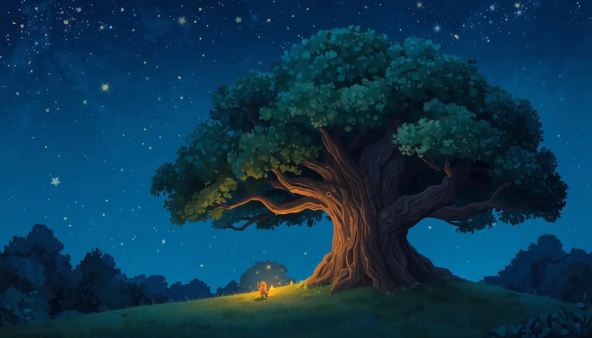

8. La biblioteca secreta del bosque

El refugio entre los árboles
Hola, pequeño explorador. Cierra los ojos e imagina que caminas por un sendero de hojas secas que huelen a pino y a lluvia fresca. El bosque es un lugar protector que te abraza con su sombra. En medio de los árboles, hay una cabaña de madera con una ventana iluminada por una luz naranja y cálida.

Entra despacio. Dentro hace un calorcito muy agradable. Siente cómo tus pies se relajan sobre la alfombra suave y cómo tus hombros bajan, soltando todo el cansancio del día. Respira este aire limpio... llena tu tripita de calma y suelta el aire como si soplaras una pequeña pluma.

La biblioteca secreta y el valor de compartir
Estás en la biblioteca secreta del bosque. Las paredes están llenas de libros que cuentan las historias más hermosas del mundo. Pero lo más especial es que aquí no estás solo. Un búho sabio, una ardilla curiosa y un pequeño zorro descansan junto al fuego.

Ellos saben un gran secreto: las historias son más brillantes cuando se comparten. Mira cómo la ardilla le presta su libro favorito al zorro, y cómo el búho lee en voz alta para todos. Al compartir, sus corazones se sienten grandes y tibios, porque dar algo a los demás es como regalar un trocito de luz. Compartir une a los amigos y hace que el bosque sea un hogar feliz para todos.

El cuento compartido en calma
Ahora, los animales se acurrucan juntos para escuchar el final del cuento. Tú también puedes participar. Imagina que compartes un deseo de bondad con ellos: "que todos seamos felices, que todos estemos tranquilos". Siente cómo ese sentimiento de amabilidad te relaja por dentro, desde la cabeza hasta la punta de los dedos de tus pies.
Tu cuerpo se siente pesado y a gusto, como si fueras uno de esos animalitos descansando frente al fuego. Ya no hay prisa. El libro se cierra despacio y el silencio dulce de la biblioteca te invita a descansar.

Cierre: sueño bajo el roble sabio
Es hora de dormir bajo el amparo de los árboles. El bosque entero te cuida mientras descansas. Te sientes feliz porque hoy has aprendido que compartir amor y bondad es tu mejor superpoder. Duerme tranquilo, sabiendo que siempre hay un lugar seguro para ti en este refugio de paz.
Mañana despertarás con la energía de un sol nuevo. Buenas noches, pequeño lector.